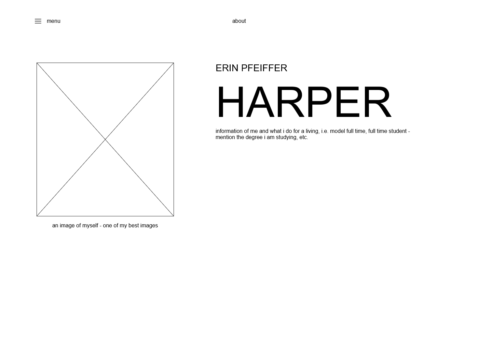
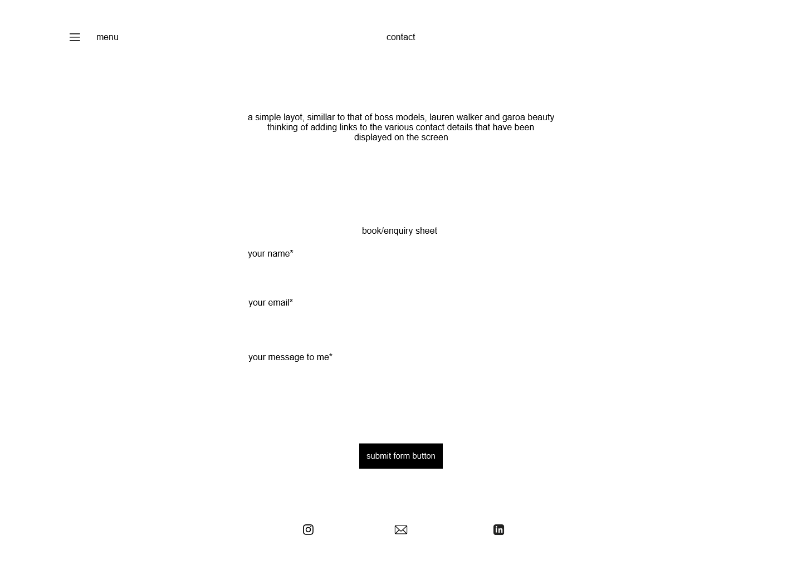
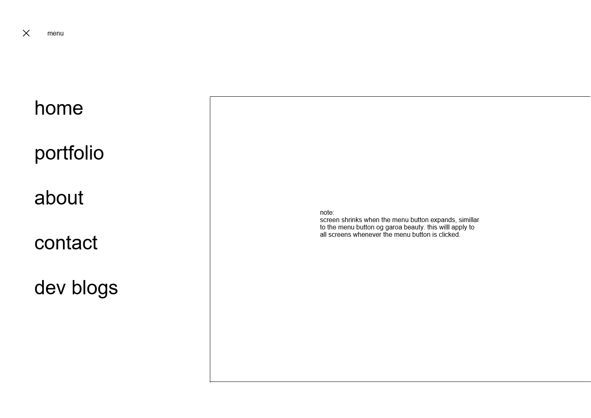
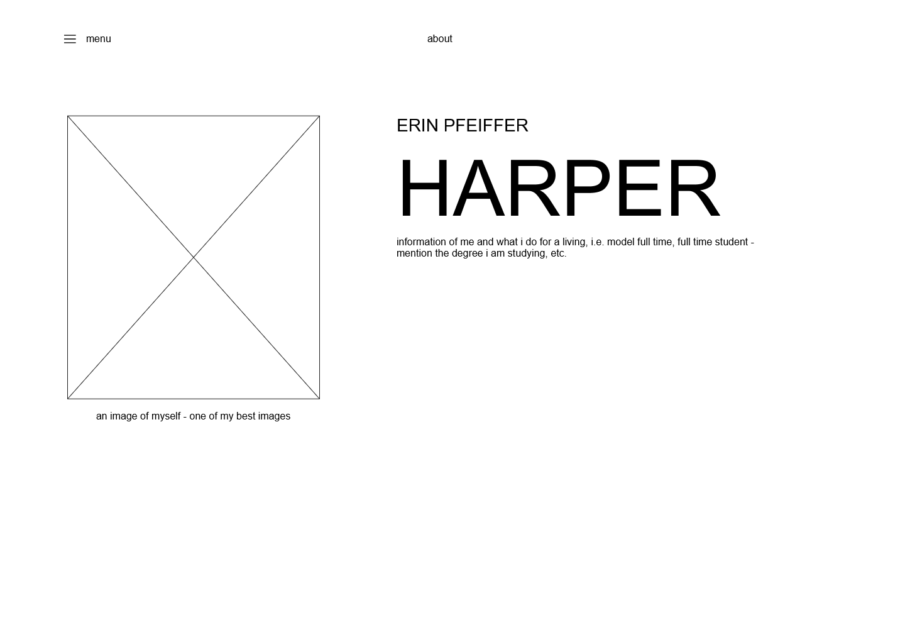
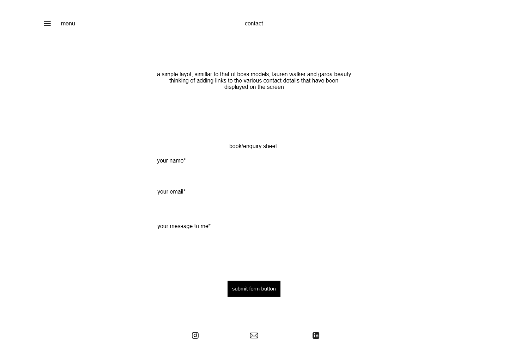
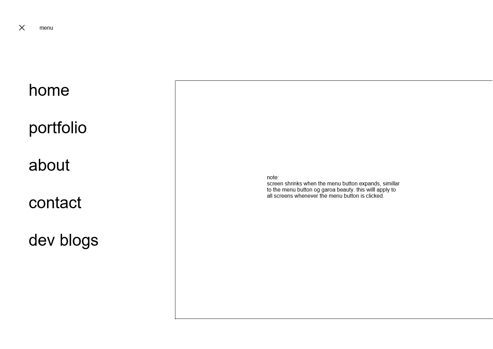
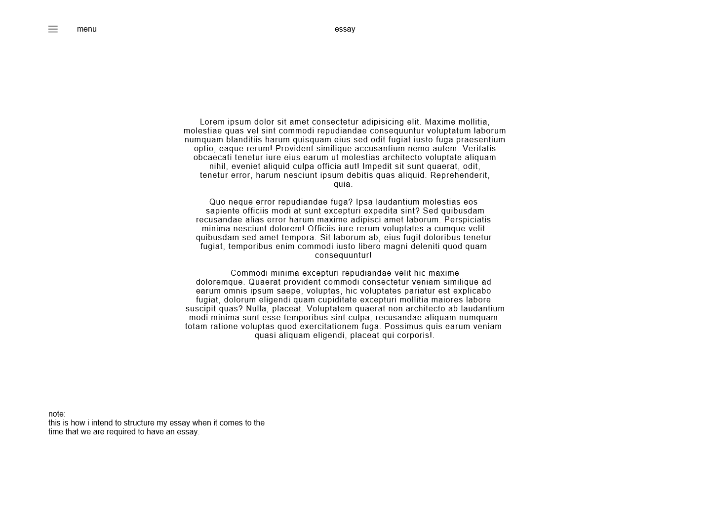
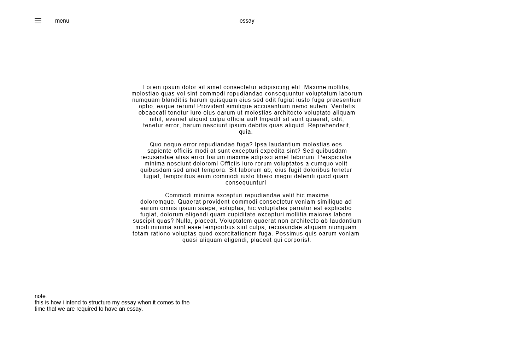

.png)


 





{kind=link}
{kind=link}
{kind=link}

 

{kind=link}

When we look at my wireframes as portrayed in the images above, I really love how they turned out along with how my website look very similar to my initial designs with a few changes made here and there, as you can see my website is not identical to my wireframe. In this I have decided to discuss each section and any major changes I made.
Menu page: For this I wanted my screen to move to the side and become smaller when it opened, however trying to implement this took most of my time, it even caused errors to appear hence why I removed it and went with something simple which I have as it is my first time designing a website.
Home page: Initially I wanted my home page to have my surname ‘Harper’ in the background with an image of myself over the word like on the website of ‘Zendaya’ however, when trying it out, I did not like the effect it created and decide to play around with the font of ‘Harper’ by making it a different font from the rest of my fonts used. Another reason why I left the image out is because I really like the idea of having a minimalistic styled website and adding a picture to it just made it too much.
About page: This page came out exactly how I wanted it, although I made a few changes with the placement of my first names and surname.
Portfolio page: For this section, it mainly relied on the images I intended to use for it, these images being my model images from when I work with makeup artist, designers etc. So with this I decided to remove the runway section and instead stick to the three various sections being editorial, beauty and studio as I know I have more images of those than I have of runway that fit my aesthetic for my website, reason why I had to do away with the carousel as there is no need for me to have it if I just have three main parts – for I only wanted it as I was going to have four parts. However, with the expansion of the portfolio, I stuck by it, only just making room for more images.
Contact page: I really struggled when it came to creating the button for the submit form, as it wasn’t going according to the size, I wanted it to be. Instead of having my icons with my information I decided to implement that on top of my page to make it much easier for the person viewing my website to grasp my contact information, without having to scroll to the bottom of the page to receive it.
Dev Blog page: For the Dev blogs, I did not include images as I did not find images that matched the aesthetic of my website (which I will discuss in the style section) hence why I left it out. I decide to use the one wire frame wherein it displays week on and week two, however making the structure of it how I wanted to continuation version of week one to look.
Essay Page: Not much has been done for this page, so there is not much I can discuss in terms of the differences I see in this page compared to my wireframe for it.
Design Page: For this page I kept it simple as you can see in the images. I decided to allow the images to open when you click on it to allow the viewer who has their whole screen open to be able to view the notes, that I made on my wireframes.
Aesthetic: For this I wanted to keep it very minimal and simple. I did not want to do too much as that can overpower the website and make it much difficult for the viewer to engage along with feeling drawn to the website.
Colour Scheme: The colour scheme I decide to use for my website were white and the various shades of grey.
Font: The fonts I used were only two one known as ‘Lara’ and the other ‘Brown Sugar’ both extracted from the same font website known as Dfonts. The font ‘Brown Sugar’ was used for my surname on the main page, and the font ‘Lara’ was used for everything else. All the fonts within my entire website only used the colour black.
Goal Alignment: The goal of my website is to create a website portfolio for my modelling work that showcases various kinds of work I’ve done which will help me receive more possible opportunities to work with other photographers, makeup artists, designers, models, etc. With this I would also like to expand on my website by including more work I’ve done which such as runway (as I could not include it as I have only walked for two designers, and I am currently walking this year on the 21st of April 2023) I wanted people to feel free to reach out to me so that we are able to collaborate and create content, therefore growing both our portfolios whether they are a photographer or makeup artist, etc.